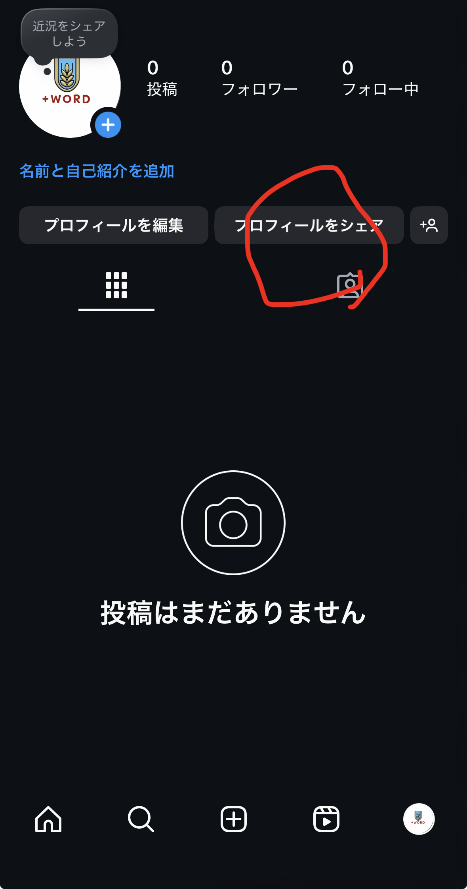
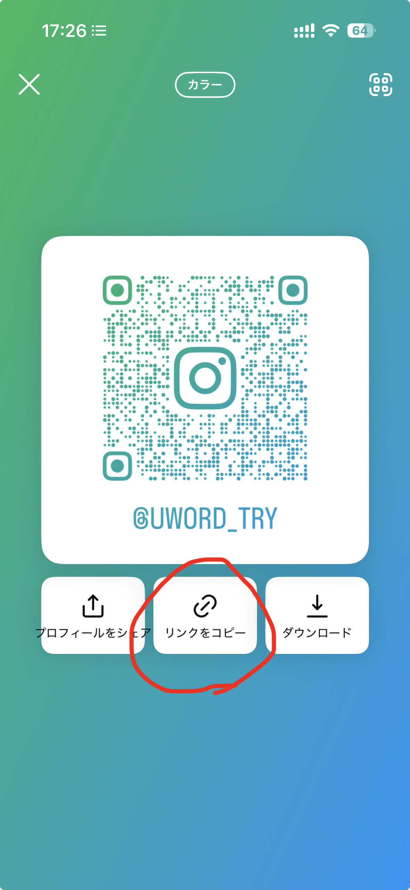
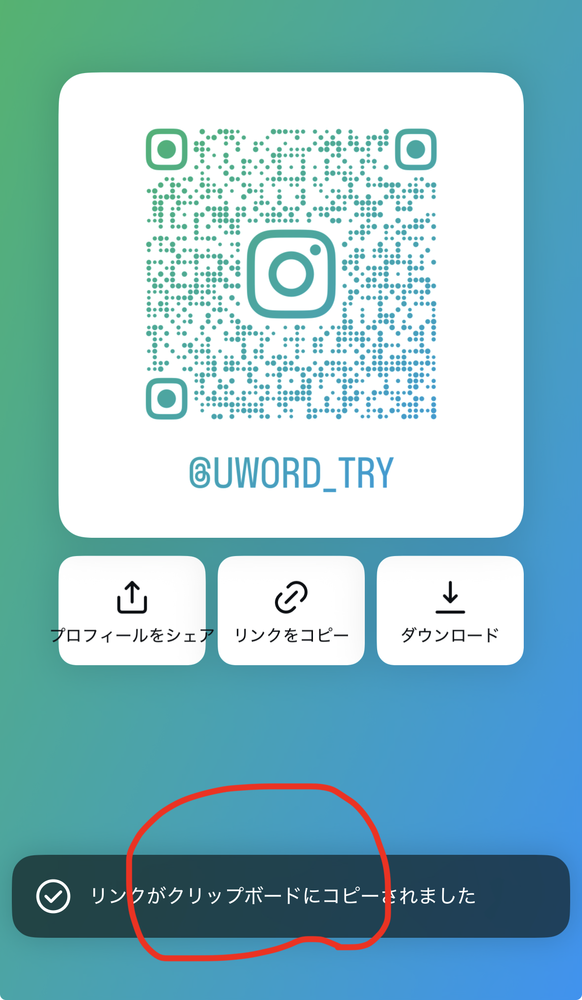

InstagramでプロフィールURLをコピーする手順
iOS / Android 共通（2025年7月現在）
STEP 1 プロフィール画面へ
- Instagramアプリを開き、画面右下のプロフィール（自分のアイコン）をタップします。

STEP 2 「プロフィールをシェア」ボタンをタップ
- 自分のバイオ（自己紹介文）のすぐ下にある「プロフィールをシェア」をタップします。

STEP 3 リンクをコピー
- QRコード画像の下中央にあるリンクアイコンをタップし、「リンクをコピー」を選択します。
- クリップボードにあなた専用のInstagramプロフィールURLがコピーされます。

STEP 4 リンクを共有
- コピーしたリンクを書き込むURLにペーストして下さい
